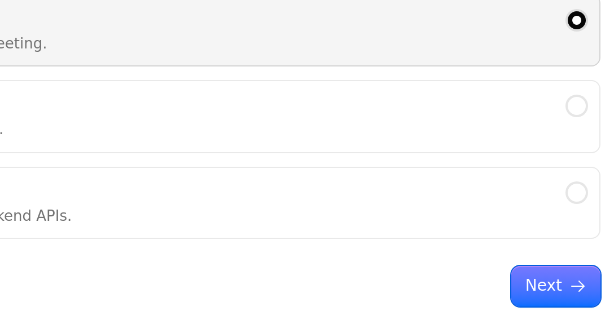
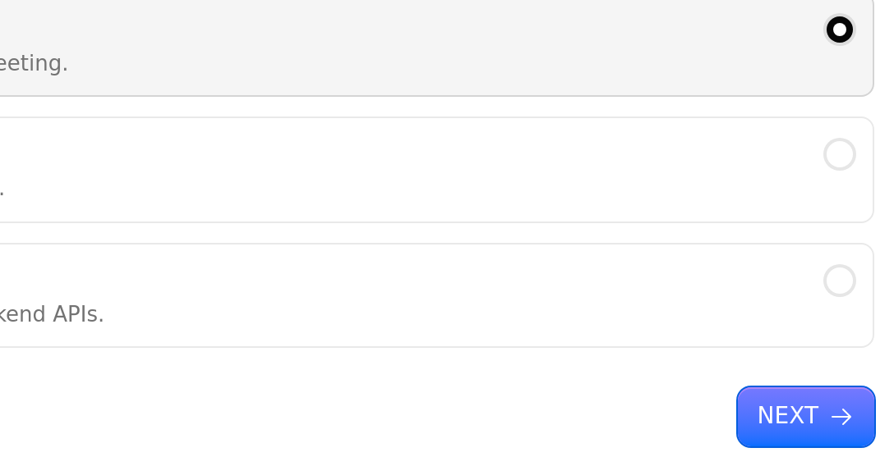
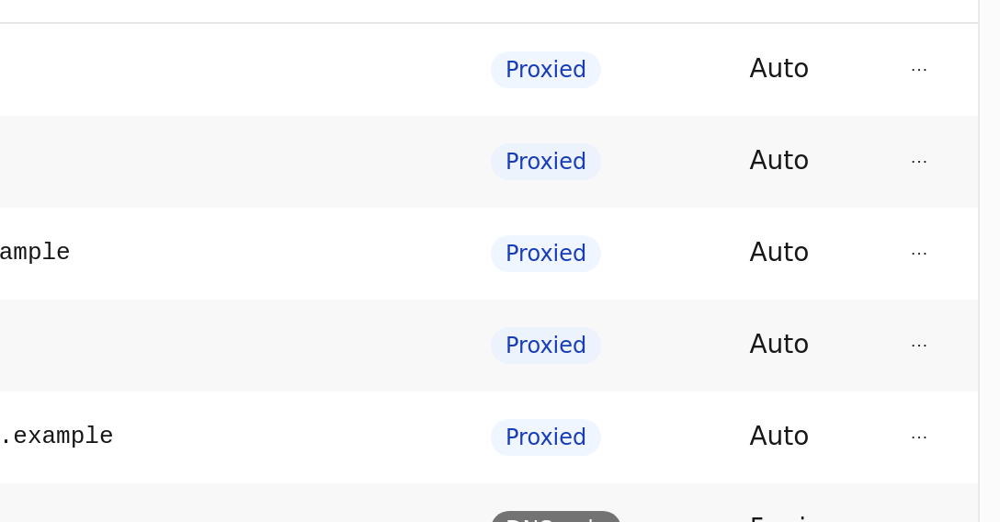
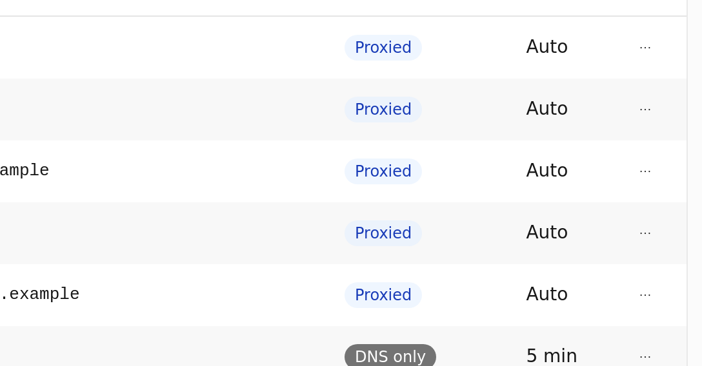

Case file · pull request review
Every pull request, entered into evidence.
Exhibit reads each pull request, finds the pages it really changes, and posts them on the PR: each changed element before and after, in its place on the page, with what the pictures measure. A check tells you when a person should look.


The record
What a reviewer gets on the pull request
One comment, updated as the run goes. First the verdict and the findings that need a look; then each change, by page, before and after. The measurements, the full pages and how Exhibit checked it are folded away.
-
Exhibit C
It reads the change, then finds the pages it reaches
An agent reads the diff with facts computed from your code: which files import the changed one, which of them use the part that changed, and which route shows it, tabs included. It names only pages the crawl found or your router defines, never a guess: a page the crawl could not reach is checked against the router line that defines it.
-
Exhibit D
Each change, in its place, measured
Exhibit reads which elements the code changed, finds each one on both versions, and shows it inside its card. When a name matches several elements, such as a button in every table row, it keeps the one that changed. It also measures each element on both sides, so the words say what the pictures show: "All capitals", or "2 px shorter · barely visible" for a text class on an icon-only button. The full pages are one click away.
-
Exhibit E
Light and dark, checked before they are shown
Each page is captured in every theme your app has, entered the way your app does it: the system setting, a class, an attribute, a stored choice or a URL parameter. Exhibit measures the page before it shows a theme, so a "dark" picture that is really light never reaches the comment.
-
Exhibit F
Clef decides, and its decisions are on file
Clef, Cloudflare's decision model, ranks the pages and compares each before-and-after pair. It returns probabilities, not prose: pages where a change shows come first, and pairs with no visible change are folded. Every request and answer is stored with the run.
-
Exhibit G
A check you can require
With a policy, each run ends the check Exhibit policy: passed, passed with notes, or needs a human. The rules read facts from the code and the pictures: a change that does not match its description, a changed design-system component, a changed export of your public API, a new accessibility problem, a page changed beyond the expected ones. Each rule holds the pull request for a person or only adds a note. A new accessibility problem counts only when a second look confirms it, and an approval from someone with write access clears the check.
Yo dawg, I heard you like evidence

so we put evidence in your evidence so you can review evidence while you review evidence
Procedure
It finds what it can. You tell it the rest.
Exhibit crawls your app for its pages and reads the diff on its own. One file in your repository tells it what it cannot find out: where your previews live, the pages to check on every pull request, and how your app switches themes, when it does not follow the system setting.
The file is read from the base branch, so a pull request cannot change its own configuration.
- Contained. Preview URLs must match an allowlist, and each browser session can reach only the two previews.
- Notes, not orders. Your
instructionsand the pull request text are data for the agent. They can steer what it looks at, never what it can do. - Every push. A new push stops the run for the old commit and updates the same comment. A draft waits until it is ready for review.
.github/exhibit.yml# Where the base and head are deployed
preview:
base: https://app.example.workers.dev
head: https://{branch}-app.example.workers.dev
# Pages to check on every pull request
routes:
always: [/]
# Only when your app ignores the system setting
themes:
light: { type: default }
dark: { type: class, target: html, value: dark }
# Notes for the agent
instructions: |
Billing pages are the critical path.
# The check: each rule holds the PR or adds a note
policy:
intentional: { below: 0.5, then: human }
design-system: { package: "@cloudflare/kumo", then: note }
accessibility: { impact: serious, then: human }Chain of custody
Built end to end on Cloudflare
No servers to run. The webhook, the browser, the models and the evidence all stay on one platform, and the container that drives the browser holds no Cloudflare or GitHub credentials.
- Workers
- Webhook, evidence, and the browser proxy.
- Workflows
- One durable run per commit.
- Sandbox
- The code and the e2e runner. No credentials.
- Browser Run
- Real Chrome for the crawl and the screenshots.
- Workers AI
- Kimi reads the change. Clef judges it.
- Flue
- The agent's tools and typed answer.
- R2
- Every screenshot and decision, on file.
Filing
Set it up
- Deploy Exhibit to your Cloudflare account: one Worker with its Workflow and Sandbox, and an R2 bucket.
- Create a GitHub App that can read contents and pull requests, write comments and checks, and receive pull request and review events; point its webhook at the Worker, and install it on your repositories.
- Add
.github/exhibit.ymlwith the URLs of your current version and your previews. - Open a pull request. The comment appears at once and follows the run.
Exhibit is early. It runs end to end on real pull requests today, and a run takes about two to three minutes.
🧑 Needs a human
3 pages changed
Findings
⚠️ Doesn't match the description
32% match
PR description
Code
Changes (4)
/workers/create· LightAll capitals


▸ Details · measured · full page (Light, Dark)
/domains/acme-robotics.example/dns· Light2 px shorter · barely visible


▸ Details · measured · full page (Light, Dark)
▸ How Exhibit checked this